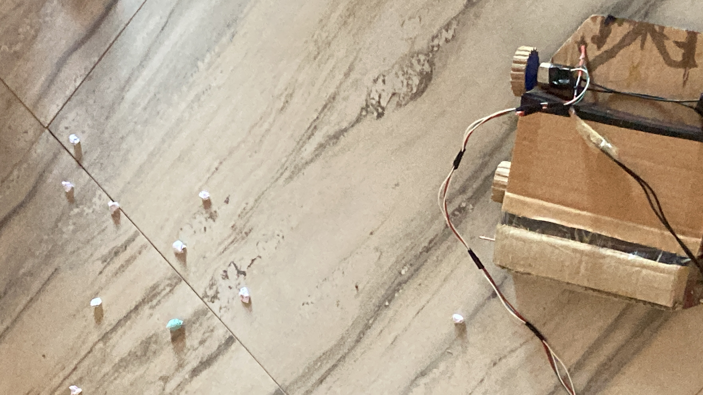
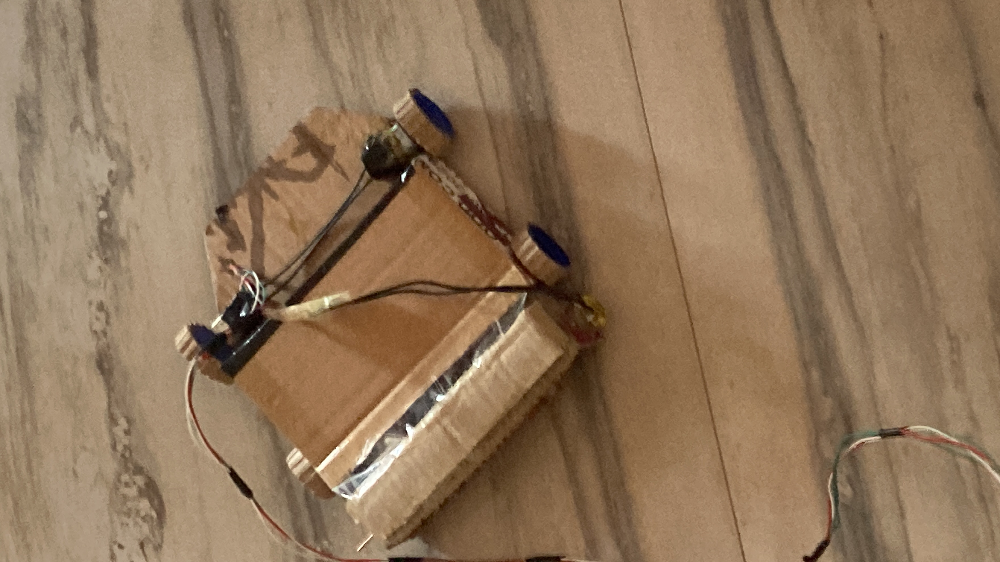
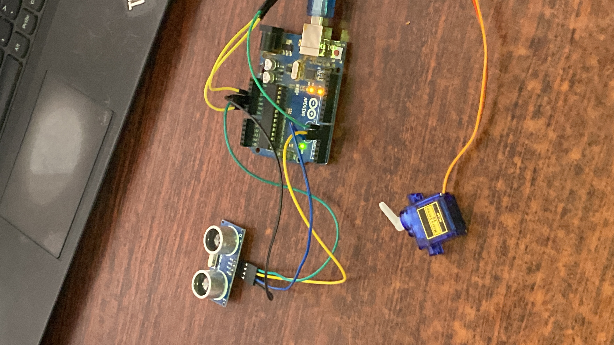
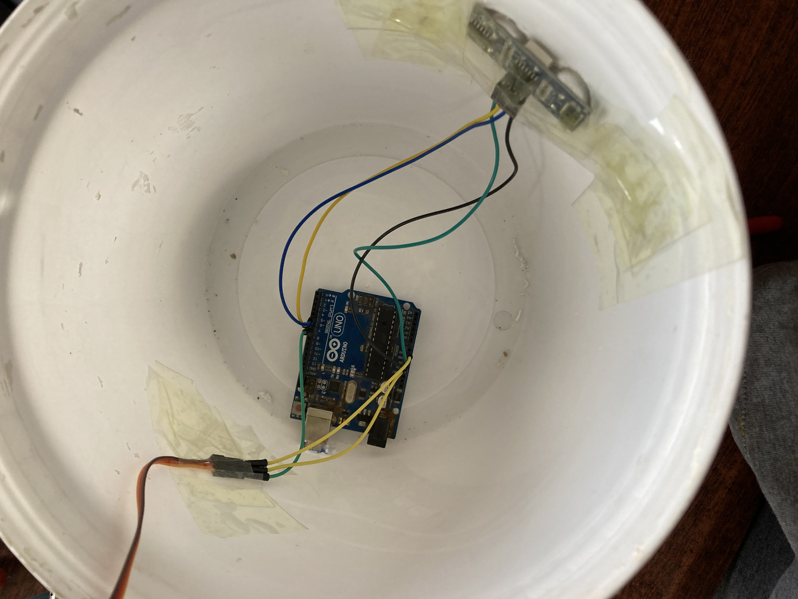
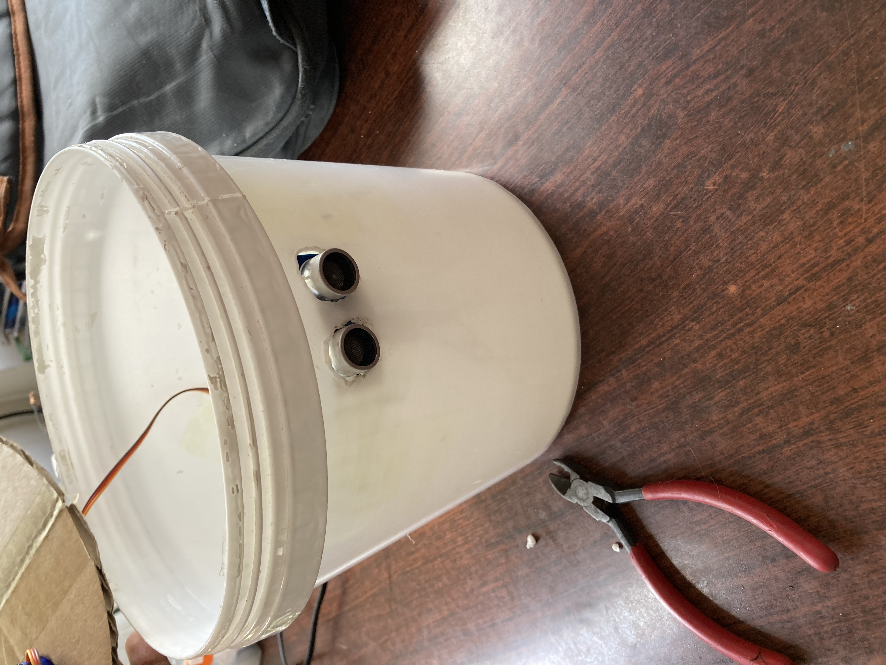
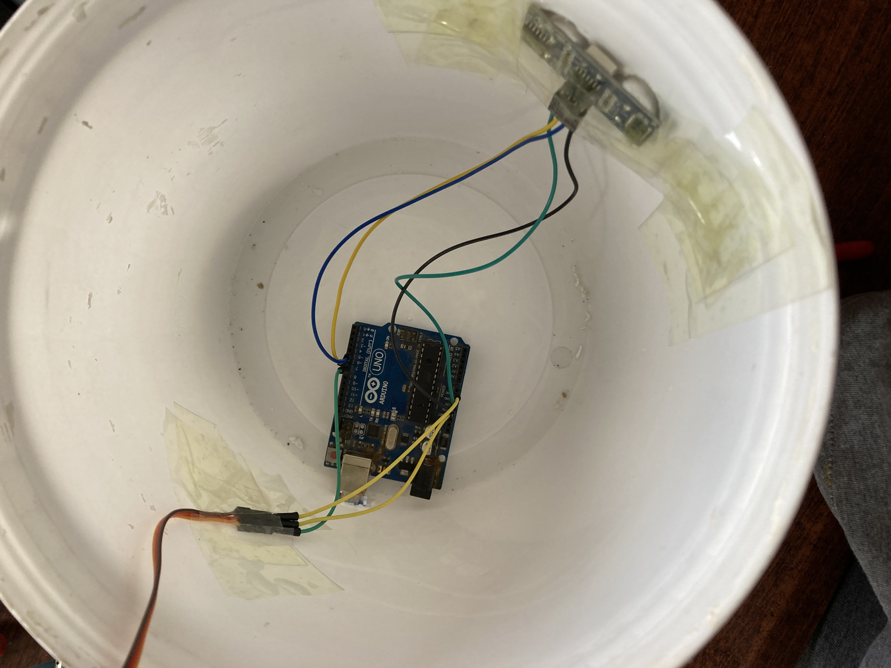
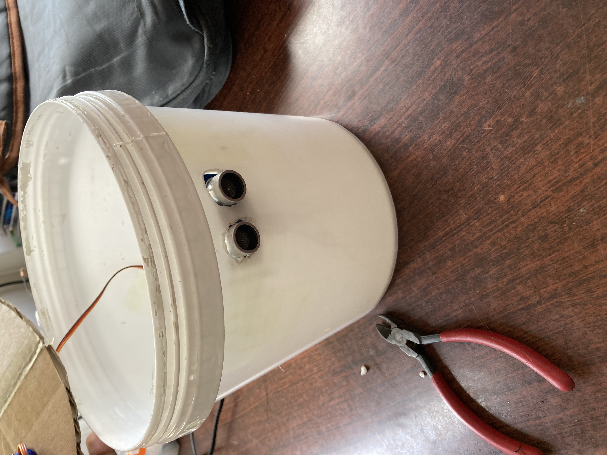

it is made up of carbord and has it's remot controle .
used for cleaning house by using the remot
 
Smart Dustbin is just a normal bin where everyone can dispose waste but integration of some hardware components is done for more efficient use of it. Smart Dustbin is integrated with some hardware components such as Arduino, NODEMCU, Servo Motor, Ultrasonic sensors.

it made up of sensore and plastic servo moter arduino uno bord some carbord and it can work whith 9v batry or by electric.
the sensors can dictect upto 50cm amy material and give power to the servo moter and the carbord at the top will be open.
 




Smart Glasses for Blind People. These “Smart Glasses” are designed to help the blind people to read and translate the typed text which is written in the English language. These kinds of inventions consider a solution to motivate blind students to complete their education despite all their difficulties.


BrandCrowd's python logo maker allows you to generate and customize stand-out python logos in minutes. BrandCrowd gives you access to a professional library of thousands of customizable python logo designs - making creating your python logo inexpensive and straightforward.